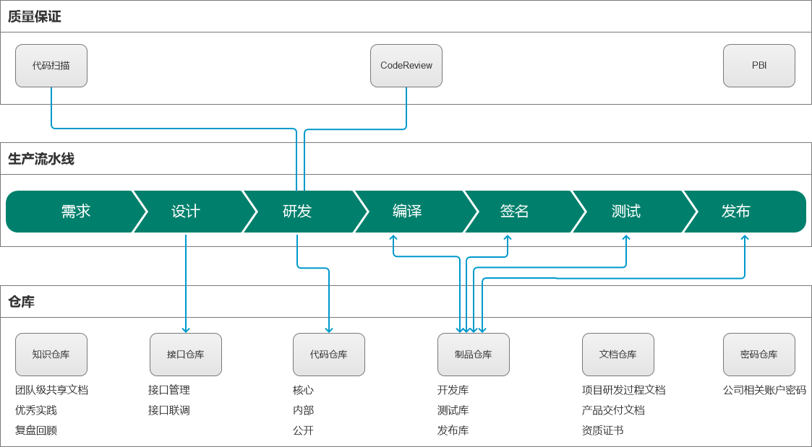
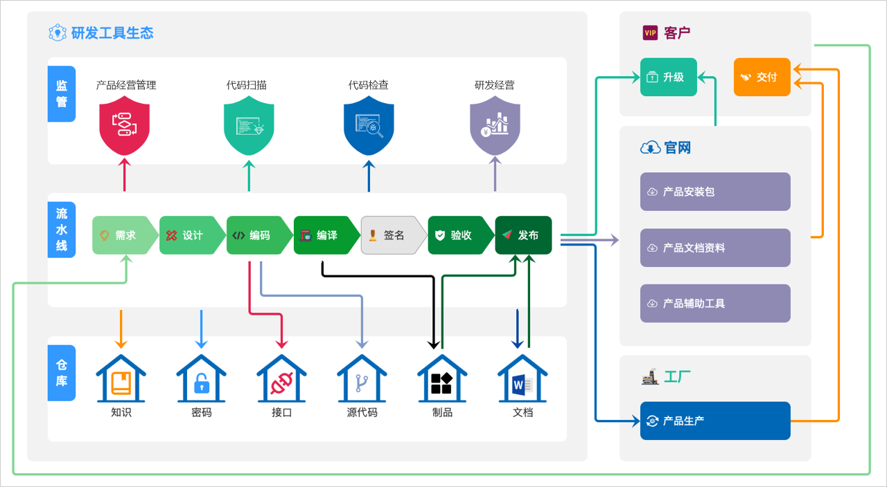

研发工具2.0
说明
在研发生态介绍这篇文章里，我将研发2019年研发工具的建设总结为4个阶段。
在这里，我将详细记录每个阶段的建设情况。
不同阶段建设情况
阶段_1：基础能力建设
阶段目标：这个阶段的目标，是基于公司的研发工具现状，来补全缺失的基础能力/工具。
在2018年研发工具状态介绍中，我介绍了2018年的时候公司研发工具的现状，可以看到，很多基础工具和能力都是缺失的，所以，我们在第一阶段，没有扩展新的业务场景，而且基于现有业务场景补全工具能力。
| 场景 | 2018年的工具 | 2019年1阶段工具建设方案 | 工具来源 |
|---|---|---|---|
| 产品管理-申请 | 邮件 | JIRA | 采购 |
| 产品管理-审核 | 邮件 | JIRA | 采购 |
| 产品管理-管理 | Excel | PBI（产品基础数据库） | 自研 |
| 项目管理-申请 | 邮件 | JIRA | 采购 |
| 项目管理-审核 | 邮件 | JIRA | 采购 |
| 需求管理 | JIRA | JIRA | 采购 |
| 代码管理 | SVN | Gitlab | 采购 |
| CodeReview | Phabricator | Gerrit | 采购 |
| 构建编译 | Qihoo Build | Jenkins | 采购 |
| 数字签名 | 本地签名工具 | 签名服务 | 自研 |
| 提测 | 邮件 | 提测系统 | 自研 |
| 测试 | JIRA、TestLink | 保持不变 | 无 |
| 制品管理 | SFTP | Artifactory | 采购 |
| 发布-公网公开渠道 | 无 | 自建CDN | 自研 |
| 发布-内网公开渠道 | 无 | 自建S3 | 自研 |
| 发布-内网加密渠道 | 无 | 发布交付平台 | 自研 |
| 发布管理 | 无 | 发布平台 | 自研 |
| 工厂生产 | 无 | 生产系统 | 自研 |
阶段_2：基础能力完善
在第一阶段完成后，我们计划开始扩展新的业务场景，以不断完善现在的研发工具。
为了明确新的、合理的业务场景，我们主要从以下两个方面来梳理：
- 收集所有业务线现有的产品研发生产流程
- 收集研发流程管理部对于公司统一研发流程的规划
基于上述两个方面的内容，我们在第2阶段确定了产生研发生产的主体流程，如下图所示：

基于上面的产品研发生产流程规划，我们新增了以下业务场景和研发工具：
| 场景 | 研发工具 | 来源 |
|---|---|---|
| 知识管理 | Confluence | 采购 |
| 接口管理 | Eolinker | 采购 |
| 代码仓库分级 | Gitlab分级部署 | 采购 |
| 文档管理 | 基于ISO9001的文档管理系统 | 自研 |
| 密码管理 | PassBolt | 采购 |
| 代码扫描 | SonarQube | 采购 |
在这个阶段，我们还对项目的需求管理工具进行了调整：
- 需求管理一直在JIRA上处理
- 研发流程管理部门提出规范：每个需求，开发的时候要单独拉分支进行开发
- 基于此，我们在这个阶段将需求管理前移到了Gitlab，使用Gitlab Issue来管理，因为Gitlab支持通过Issue直接拉取分支
阶段_3：研发工具联动
公司的研发工具，从2018年开始，一直到第2阶段建设完成，其实每个工具彼此之间都是独立的，无论是业务还是数据，都不互通。
这种情况在当时导致了一些问题：
- 工程师在实际开发过程中，需要手动处理很多重复性工作，效率低，并且过程容易出错
- 同一个需求开发，不同系统里的数据一致性得不到保障，后期统计分析无法开展
为了解决这个问题，我们在这阶段主要解决不同工具之间对接的问题，主要有以下一些业务场景：
- 提交代码后自动触发代码扫描
- 合并分支时自动触发CodeReview
- 提交代码后自动触发编译构建
- 编译制品自动入库
- 编译任务完成后自动触发签名服务
- 签名成功后自动触发提测任务
- 测试通过后自动触发制品检查和安全扫描
- 制品检查通过后自动触发发布任务
阶段_4：经营管理工具
在第3阶段建设完成后，基于公司经营管理提出的需求，我们需要提供整个产品研发生产过程中的一些数据，来支持公司经营管理分析，所以，在阶段4，主要是基于产品研发流水线，自研了产品研发经营管理平台。
在研发模式介绍一文中，有说明公司的研发模式是由人效主导的，那我们在阶段4建设的研发经营管理平台，其实就是用来管理人效的，它主要解决以下一些场景：
- 项目成本管理
- 项目资源管理
- 项目计划管理
- 团队资源流向分析
- 公司、部门、项目、个人，维度的人效分析
- 财务核算管理
最终效果

上图所示，是整个研发工具生态的最终形态，左侧公司内网环境的工具生态，右侧为公网环境下的生产和交付场景。
研发工具生态，除了基础的工具能力较之前更加完善以外，还融入了研发流程，并且，不同工具之间也支持自动化的对接，一方面提升了工程师实际工作的效率，另一方面也为公司经营管理更好地提供了数据支撑。